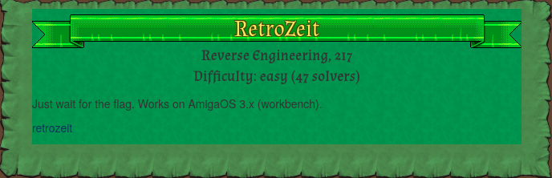
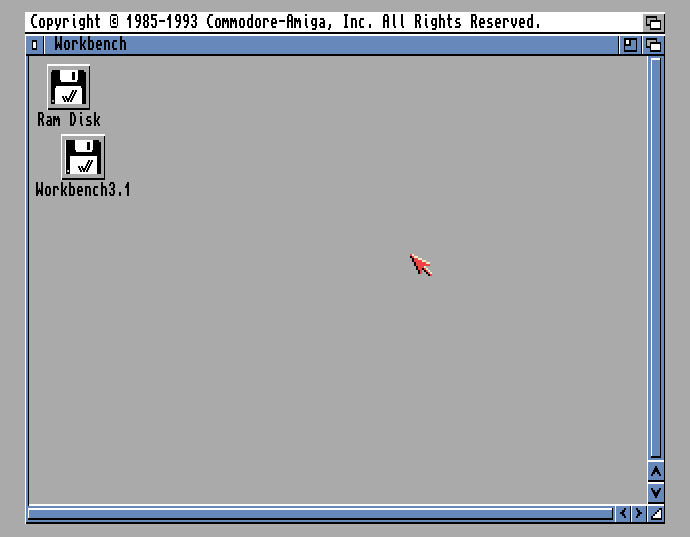
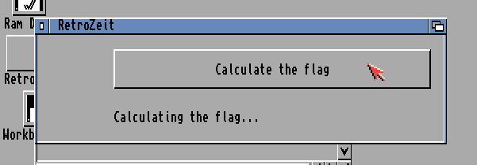
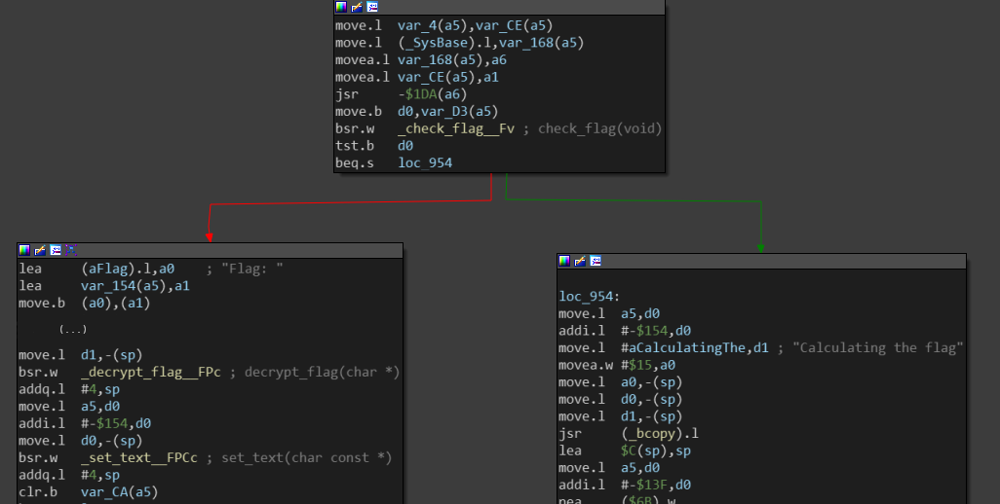
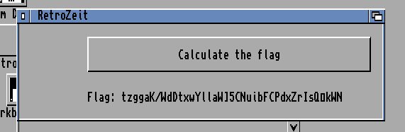
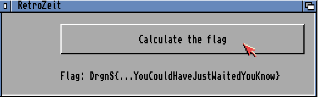

DragonCTF 2020 - "RetroZeit" - Reverse Engineering
22-11-2020

Introduction
This challenge was part of DragonCTF 2020 organized by
Dragon Sector, a capture-the-flag team from Poland.
As the description suggests, we are given an executable that works on AmigaOS 3.x
Workbench which is an operating system released in 1993. It was the operating system shipped
with the Commodore Amiga 4000 (A4000) desktop computer whose CPU is supported by 68k
(Motorola 68000) architecture.
$ file retrozeit
retrozeit: AmigaOS loadseg()ble executable/binaryThe challenge was solved by me and my teammate @AndreCirne from xSTF.
Setup the emulator
Disclaimer: Emulation wasn't required at all. In fact, the flag could be obtained just
by examining and reversing the binary file.
However, we wanted to play a bit with the emulator and try to execute the binary.
The emulator used was FS-UAE Amiga Emulator and works on Linux. It has a lot of configurations that enable users to tweak and customize Amiga. There's also an entire scene around retro games forums that offer a lot of resources and games to setup the emulator devices.
We found AmigaOS 3.1 Workbench in some old historical archive (and also a Kickstart ROM). These
files were required to setup FS-UAE.
When launching the emulator, we are presented with this cool window:

Now we had to figure out how to place the binary in our emulated desktop in order to execute it.
The first thing we tried was to create a new hard drive with the
After having a look at the file structure of floppy disk files (in particular, ADF files) we
decided to create a floppy containing the executable.
Since we didn't want to start a project from root, we downloaded an open-source
"Hello World" version from this GitHub
repository (HelloAmi).
We managed to hack the Amiga Disk File and replace the executable binary with our
own,
After loading the floopy in emulator and executing it, we could wait ad aeternum for
the flag to be calculated.
Our goal is to understand how the calculation is performed so we can get the flag quickly.

Reverse engineering
We started by disassembling the binary in IDA. Ghidra seems to have a decompiler for this
arch but it looked messy and couldn't make sense of the resulting code.
The principal functions (or subroutines) are the following:
main start_timer check_flag retry_flag decrypt_flag set_text
We immediately thought that the flag characters would be printed one at time with possibly
exponential pauses between them.
This turned out to be false. No character was ever printed because the program was looping
in
Once the button is pressed, it triggers the

Note that
We tried to one-shot the challenge by patching the binary and transform
This modification would lead to
When executing the patched binary on our Amiga machine, it revealed an interesting string which
we assumed to be the encoded flag:

At this time, we knew it will need a little more effort. We started digging the assembly and
translating to (kind of) pseudocode.
We found that subroutines were working over two byte arrays:
- enc_chr:
8B 84 9A 9B 9A B1 D6 AF 93 B2 81 8C 84 AB 9D 9C 8E B9 B0 D9 A8 A4 9C 81 85 A0 A6 B4 87 9A BB 92 96 AD 8C D7 B0 8D 97 - enc_idx:
16 0C 24 17 13 19 07 09 0E 23 05 01 18 21 0D 10 12 1F 1A 1E 22 00 0F 0B 08 15 11 02 1D 1C 26 03 04 25 14 20 06 1B 0A
In particular,
For example:
0x8B :~(0x8B ^ 0) = 0x74 = 't' 0x84 :~(0x84 ^ 1) = 0x7A = 'z' (...) 0x97 :~(0x97 ^ 38) = 0x4E = 'N'
We still need to understand what kind of calculation is being done before we can actually decode the flag.
On the other side,
- Elements on even indices must be even and in decreasing order
- Elements on odd indices but be odd and in increasing order
We just noticed a bit later that
To satisfy the constraints, we must re-arrange the elements in
- Even elements in even indices (decreasing):
0x26 _ 0x24 _ 0x22 _ ... _ 0x00 - Odd elements in odd indices (increasing):
_ 0x01 _ 0x03 _ 0x05 _ ... _ 0x25
After re-arranging the array it should look like this:
- enc_idx:
26 01 24 03 22 05 20 07 1E 09 1C 0B 1A 0D 18 0F 16 11 14 13 12 15 10 17 0E 19 0C 1B 0A 1D 08 1F 06 21 04 23 02 25 00
Things became a little more obvious when we decided to analyze the behavior
of
Of course, it would take a reeeally long time to eventually match the correct order of the 39 elements while randomizing it. Maybe even more than the average lifespan, so we wanted to find a solution.
The solution
At this point we knew it was a permutation and had to find the correct order
of bytes of the
We started by trying to map the elements of
- Index 0 -> element at
enc_chr[enc_idx[0]] - Index 1 -> element at
enc_chr[enc_idx[1]] - and so on...
However it did not work. After decrypting the permutation it would still result in garbage flag.
Then we tried the inverse:
- Index
enc_idx[0] -> element atenc_chr[0] - Index
enc_idx[1] -> element atenc_chr[1] - and so on...
Still without success. There were not many more ideas left to test so we tried
to "bruteforce" the prefix of the flag by hand (we knew the flag starts with
In order to the first decoded character be
Remember the operation of decoding the flag:
The byte
The number 30 was actually the distance/displacement between the index
of first byte in ordered
We got the flag on the emulator by patching the bytes on data section with the correct re-arranged array :)

The following Python script will also calculate the permutation and print the flag:
#!/usr/bin/env python
enc_chr = ['8B', '84', '9A', ..., '97']
enc_idx = ['16', '0C', '24', ..., '0A']
ordered_idx = ['26', '01', '24', ..., '00']
# Calc the permutation
sigma = list()
for b in ordered_idx:
pos = enc_idx.index(b)
sigma.append(enc_chr[pos])
#prefix = "BB8C9A92A881" # "DrgnS{"
print("Permutation: {}".format("".join(s for s in sigma)))
# Decrypt the flag
n = len(sigma)
i = 0
flag = ""
while i < n:
b = int(sigma[i], 16)
b = b ^ i # xor
b = b ^ 0b11111111 # not
flag += chr(b)
i += 1
print("Flag: {}".format(flag))
References
- https://ctf.dragonsector.pl
- https://en.wikipedia.org/wiki/Workbench_(AmigaOS)
- http://68k.hax.com
- https://fs-uae.net
- https://github.com/nicodex/HelloAmi